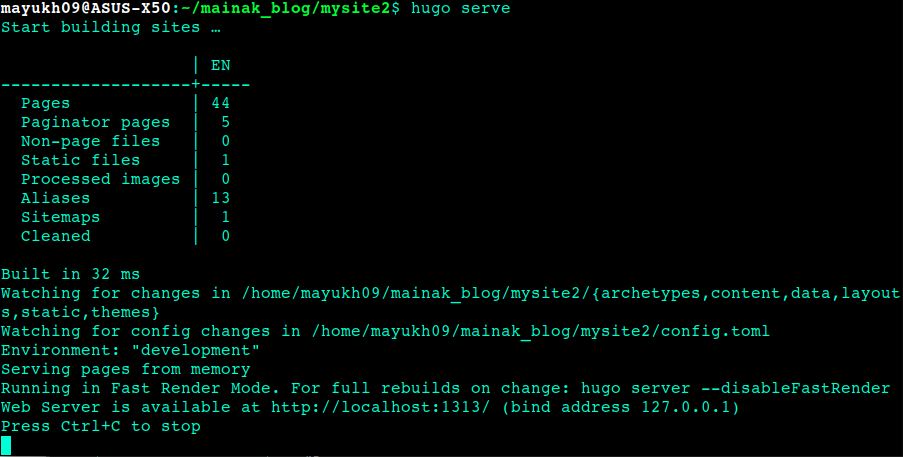
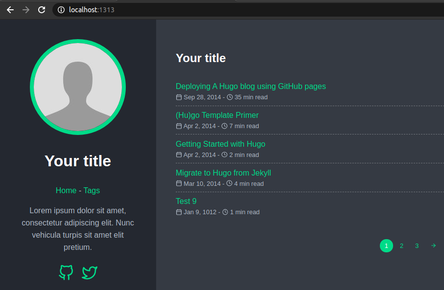
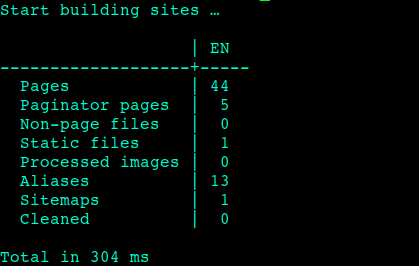

How Did I Create This Blog ?
Intro :
I should have updated my blog long ago, but here I am, about 7 months late, with a brand new blog. So, how did I create this and host it online on Github Pages, given that I have near zero experience in web-dev?
My brother suggested me to use Hugo for my new blog, I googled ‘Hugo templates’ and ended up at https://themes.gohugo.io/. I spent around an hour to shortlist and pick a suitable theme. Then came the hard part (at least for me)
The Difficult Part :
I’ll divide it into steps :
-
Install Hugo ; I’ll skip this step, just google “install hugo {your OS i.e. Ubuntu, Windows}” and follow the steps.
-
Then you’ll need to create a new site and download a theme. I simply cloned a theme into the themes directory.Copy paste the following commands in your terminal
# Create new site
$ hugo new site mainaks_site
$ cd mainaks_site
$ cd themes
# Download the theme of your choice. The given link is for the theme I used.
$ git clone https://github.com/vaga/hugo-theme-m10c.git themes/m10c
-
Go into
./mainaks_site/themes/hugo-theme-m10C/exampleSite/and copy paste the files in that directory (like config.toml, content etc.) into./mainaks_site/. Replace existing files if asked. -
One important thing to remember is to edit the
config.tomlfile in./mainaks_site/.- Open the
config.tomlfile and set the themedir as the directory to the cloned theme which was./themes/in my case. - Set theme as the name of the cloned folder, which was
m10cin my case because I had renamed the cloned folder fromhugo-theme-m10cto justm10c. - Set the baseURL as
https://username.github.io/where username is your Github username, and set blog title. - Set the other params to you wish.
There’s one more change that needs to be made in the
config.tomlfile, which I’m saving for later. Let’s run the website locally first. - Open the
(Local) Moment of truth :
It took me 2 hours to make it this far. If you are running quicker, thank the Hugo-Gods (and me for writing this post). Ok, lets get back to business.
Open ./mainaks_site/ directory in your terminal and run hugo serve. If all goes well, you’ll see something like the following image.

In the above image, the mysite2 is equivalent to mainaks_site. Now open http://localhost:1313/ in your browser, you will find your blog up and running :)

Edit Content and Add Images :
Ok, this step should be easy. All you need to do now is edit the markdown files in ./mainaks_site/content/posts/ directory.
If you want to add images in your post, create a folder named images in the ./posts/ directory and store your images there, then use the following syntax in your markdown file to insert the images.

Build Site and Upload Files to Github :
Navigate into ./mainaks_site/ and run $ hugo in your terminal, wait for hugo to finish building your site. Now you should see an output that looks like the following image.

Now upload the contents of the ./mainaks_site/public/ into your GitHub repository. This repository should be named in the format of your_username.github.io. Github pages deploys this repository automatically at https://your_username.github.io. In my case, it is hosted at https://mainakdeb.github.io where mainakdeb is my Github username.
Well, thats how I got this blog up and running. I’ll upload many more posts in the upcoming weeks, stay tuned for that :)